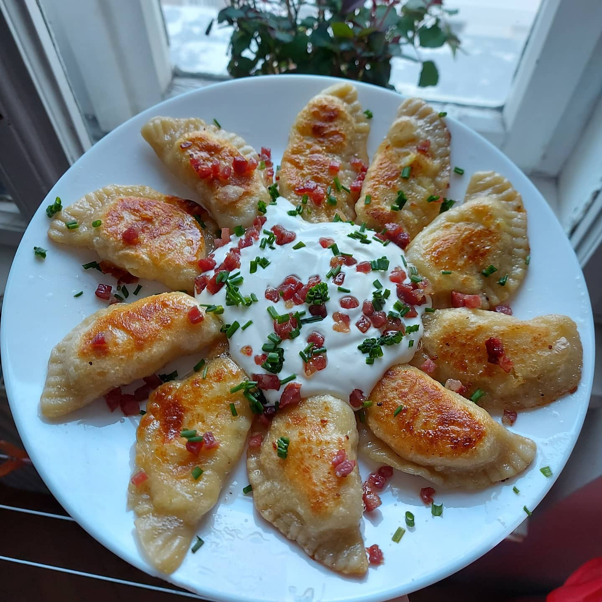

Bryndzové pirohy podľa @nikusikpikusik39 — Normy Jedál
opečené bryndzové pirohy mňamka 🧡
#slovakiafood #pirohy #bryndzovepirohy #slowakei #schafkäse #kartoffeln #kartoffelnteig #sheepcheese #potato #potatodough #speck #lauch #sauerrahm #polskepierogi 🇵🇱 #polske #pierogi #polishfood #foodlovers #dnesjem #instagood #instafood #foodlovers #foody #lovefood #eatlover #loveeating #picoffood #pickoftheday #essenmachtglücklich 🥟🥟🥟